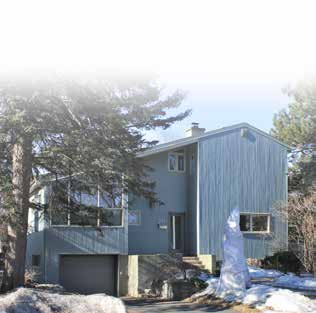

The modern house (including the bungalow) La maison moderne

© Ville de Saint-Lambert / Patri-Arch (G. Mongrain, M. Dubois), Répertoire des courants architecturaux, fiche 10

© Ville de Saint-Lambert / Patri-Arch (G. Mongrain, M. Dubois), Répertoire des courants architecturaux, fiche 10
The postwar house: bungalow or two-storey box, garage or carport built in, low or flat roof, big windows sized to the room behind them, glass block by the door, a massive chimney as the one vertical. No ornament; the mosaic of stone, brick and wood is the décor.
Modernism via the Bauhaus and the Chicago School, reacting against ornament-laden historicism; its commonest domestic form, the bungalow, "devenu le modèle d'habitation dominant après la Seconde Guerre mondiale" with the baby boom, suburbanisation and easier access to property and the car. In Saint-Lambert some 700 houses went up in the five years after the war; Préville, created 1948 and annexed 3 May 1969, is the western extension of that boom.
| Tenure / plan | single-family |
|---|---|
| Storeys | 1–2 |
| Roof form | flat-or-low-slope |
| Roof pitch | – |
| Window proportion | horizontal |
| Principal cladding | stone, artificial-stone, clay-brick, wood, roughcast, metal-siding |
| Roofing | see materials |
| Garage | integrated-or-carport |
| Lot width | – |
| Front setback | – |
| Side setback | – |
| Front yard green | – |
What Répertoire des courants architecturaux says about this type
- The single-storey bungalow with carport or garage "fait fureur" in the 1950s and 60s, when Saint-Lambert boomed; mostly standardised plans, some architect-designed one-offs.
- Rectangular or articulated plan, one level (de plain-pied) or two storeys, often with garage or carport; flat roof or low slopes, sometimes inverted, variously oriented.
- Few projections: overhanging eaves, marquises and bay windows are frequent; some angular façades with advances and recesses; massive chimneys often the only vertical element.
- Corps de bâtiment rectangulaire ou de plan articulé d'un seul niveau (de plain-pied) ou de deux étages, souvent doté d'un garage ou d'un abri d'auto, avec un toit plat ou à versants de faible pente. La pente de la toiture, parfois inversée, peut être orientée de différentes façons.
- La maison moderne possède en général peu d'éléments en saillie. Les débords de toit saillants, les marquises et les fenêtres en saillie … sont toutefois fréquents … Les cheminées massives, constituant souvent le seul élément vertical de la composition, sont également à signaler.
- Generally no applied ornament; asymmetrical composition stressing horizontal lines; façade "mosaics" made by the arrangement, textures and colours of brick, stone and wood; occasional worked-metal railings or grilles, ceramic insertions or colour panels.
- La maison moderne ne possède généralement aucune ornementation appliquée. La composition asymétrique met habituellement l'accent sur les lignes horizontales. Ce sont l'agencement, les textures et les couleurs des matériaux … qui créent des mosaïques en façade.
- Doors of varied models, solid or glazed; patio doors for the rear; garage doors sober and matched to the front door.
- No standard window; size and type vary by room; glass-block openings frequent.
- Portes de modèles variés, opaques ou ajourées. Les portes-fenêtres (portes-patio) devraient être réservées pour la façade arrière.
- Il n'y a pas de fenêtre type pour la maison moderne. … Les ouvertures dotées de blocs de verre sont fréquentes.
- Natural or artificial stone (concrete), brick, wood, roughcast, metal siding, often combined.
- Asphalt shingle entirely suitable on pitched roofs.
- Les murs extérieurs peuvent présenter plusieurs matériaux, parfois combinés, dont la maçonnerie de pierres naturelles ou artificielles (béton), la brique, le bois, le crépi et le parement métallique. … Pour les toitures en pente, le bardeau d'asphalte convient tout à fait.
- Imitation materials (engineered wood such as Canexel, vinyl, plastics) proscribed.
- Wood windows may be replaced in aluminium or PVC provided the opening mode (crank, guillotine, sliding) matches the original.
- Do not add ornament; preserve the stripped look.
- Do not raise foundations or change the roof form; side/rear reduced-volume additions only.
Same word elsewhere
- First-generation North American bungalow (bungalow nord-américain de première génération) (Gatineau)
- Central-gable house (maison à pignon central) (Gatineau)
- Complex gabled-roof house (maison à toit complexe à pignon) (Gatineau)
- Mansard-roofed house with gable wall on the façade (maison à toit mansardé avec mur pignon en façade) (Gatineau)
- One-and-a-half-storey wooden matchstick house (maison allumette en bois d'un étage et demi) (Gatineau)
- Wood matchstick house of two to two and a half storeys (maison allumette en bois de deux à deux étages et demi) (Gatineau)
- Brick matchbox house, two to two and a half storeys (maison allumette en brique de deux à deux étages et demi) (Gatineau)
- Cubic house (maison cubique) (Gatineau)
- CIP executive's house (maison de cadre de la CIP) (Gatineau)
- Flat-roofed wood house (maison en bois à toit plat) (Gatineau)
- Flat-roofed brick house (maison en brique à toit plat) (Gatineau)
- L-plan house with a two-slope (gable) roof (maison avec plan en L à toit à deux versants) (Gatineau)
- English-revival stone house (Hampstead)
- Postwar detached house (Hampstead)
- Garden City House (Town of Mount Royal)
- Faubourg House (Town of Mount Royal)
- Canadian House (Town of Mount Royal)
- New England House (Town of Mount Royal)
- Georgian House (Town of Mount Royal)
- English Manor House (Town of Mount Royal)
- Bungalow (Town of Mount Royal)
- Cottage (Town of Mount Royal)
- Split-Level (Town of Mount Royal)
- Prairie House (Town of Mount Royal)
- Modern house on the flank (Outremont (borough of Montréal))
- Faubourg house (Le Plateau-Mont-Royal (borough of Montréal))
- Detached urban house (Le Plateau-Mont-Royal (borough of Montréal))
- Row urban house (Le Plateau-Mont-Royal (borough of Montréal))
- Traditional French and Québécois house (Saint-Lambert)
- Mansard-roofed house of Second Empire influence (Saint-Lambert)
- Queen Anne style house (Saint-Lambert)
- Boomtown house with false mansard (Saint-Lambert)
- Boomtown house with crown (parapet or cornice) (Saint-Lambert)
- Cubic (Four Square) house (Saint-Lambert)
- House of Arts and Crafts influence (Saint-Lambert)
- Lower-town company house (Ross and Macdonald, 1918–1923) (Témiscaming)
- Upper-district company house (Somerville, 1925–1950) (Témiscaming)
- Greystone row house (Westmount)
- Mansard-roofed house of Second Empire influence (Westmount)
- Queen Anne house (Westmount)
- Richardsonian Romanesque house (Westmount)
- Semi-detached brick house (Westmount)
- Tudor Revival house (Westmount)
- Arts and Crafts semi-detached house (Westmount)
Same form elsewhere
- First-generation North American bungalow (bungalow nord-américain de première génération) (Gatineau)
- Postwar detached house (Hampstead)
- Bungalow (Town of Mount Royal)
- Cottage (Town of Mount Royal)
Same period elsewhere
- Family M houses (models M1–M11), regionalist neo-vernacular (Arvida (borough of Jonquière, Saguenay))
- Family F semi-detached houses (models F1–F18) (Arvida (borough of Jonquière, Saguenay))
- Families P, Q, S and T (paired and single models along boulevard du Saguenay and rues Powell, Neilson, Berthier, Parks, Joule) (Arvida (borough of Jonquière, Saguenay))
- Family R row houses (models R2–R4) (Arvida (borough of Jonquière, Saguenay))
- Families E, G, H, J, K, L, N, Y and Z (Arvida (borough of Jonquière, Saguenay))
- Wartime Housing Ltd. houses (Arvida (borough of Jonquière, Saguenay))
- First-generation North American bungalow (bungalow nord-américain de première génération) (Gatineau)
- CIP executive's house (maison de cadre de la CIP) (Gatineau)
- English-revival stone house (Hampstead)
- Postwar detached house (Hampstead)
- Contemporary rebuild (Hampstead)
- Garden City House (Town of Mount Royal)
- Faubourg House (Town of Mount Royal)
- Faubourg Apartment Block (Town of Mount Royal)
- Canadian House (Town of Mount Royal)
- New England House (Town of Mount Royal)
- New England Apartment Block (Town of Mount Royal)
- Georgian House (Town of Mount Royal)
- English Manor House (Town of Mount Royal)
- Bungalow (Town of Mount Royal)
- Cottage (Town of Mount Royal)
- Split-Level (Town of Mount Royal)
- Prairie House (Town of Mount Royal)
- Modern Apartment Block (Town of Mount Royal)
- Opulent detached residence (Outremont (borough of Montréal))
- Apartment building (conciergerie) (Outremont (borough of Montréal))
- Modern house on the flank (Outremont (borough of Montréal))
- Apartment block without courtyard (Le Plateau-Mont-Royal (borough of Montréal))
- Apartment block with courtyard (Le Plateau-Mont-Royal (borough of Montréal))
- Small apartment building (Le Plateau-Mont-Royal (borough of Montréal))
- Upper-district company house (Somerville, 1925–1950) (Témiscaming)
- Tudor Revival house (Westmount)
- Arts and Crafts semi-detached house (Westmount)
- Interwar apartment house (Westmount)
- Modernist residential tower (Westmount)
Same style elsewhere
- First-generation North American bungalow (bungalow nord-américain de première génération) (Gatineau)
- Postwar detached house (Hampstead)
- Bungalow (Town of Mount Royal)
- Modern Apartment Block (Town of Mount Royal)
- Modern house on the flank (Outremont (borough of Montréal))
- Small apartment building (Le Plateau-Mont-Royal (borough of Montréal))
- Modernist residential tower (Westmount)